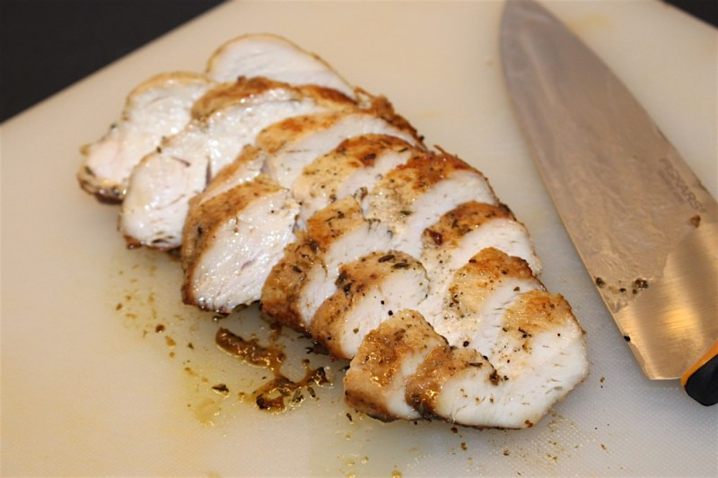

Zeinas Saftiga Kycklingfilé

Ingredienser
- 4 st kycklinfiléer
- 1 tsk dijonsenap
- 1 tsk timjan
- 1 pressad vitlöksklyfta
- 1 tsk svartpeppar
- 1 msk salladskrydda eller örtsaslt
- 3 msk balsamvinäger
- 3 msk olivolja
Instruktioner
- Värm ugnen till 250 grader
- Blanda ihop marinaden och ställ åt sidan
- Krydda filéerna med salt och peppar och stek på hög värme ca 4-5 minuter per sida
- Lägg filéerna i en ungsform, häll över marinaden och ta genat in i mitten av ugnen. Sänk värmen till 200 grader
- Efter 15-17 minuter ta ut formen och täck genast med folie. Låt vila 15 minuter och skär sedan filéerna i diagonala skivor